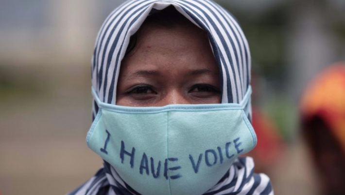
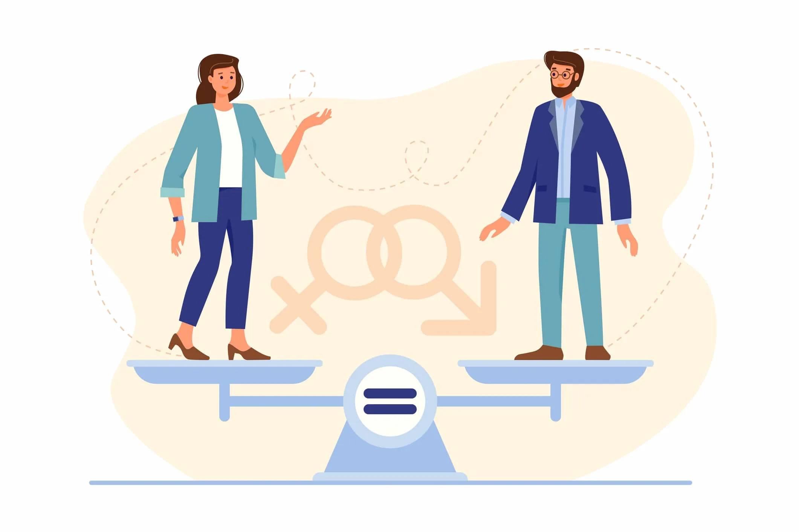

Ways We Can Promote Gender Equality
Home | Now | Inequalities | Why | Ways | Sources
Ways in which we can promote gender equality at a small scale
One of the most basic ways we can promote gender equality at home and in the neighborhood is by involving women in the decision making process. Their unique perspective on issues within
the house and in the neighborhood can lead to more effective decision making.
We need to value the work of women and encourage them to aspire to achieve great things. If this
happens, the likelihood of women being in a place of power to help other women in the future is higher and makes for a better society as a whole.
Being against violence against
women and child marriage and sexual abuse, we can significantly reduce the chance that women are left behind just tending to the home without an education.

Ways in which we can promote gender equality at a large scale
Governments need to continue and bring in more programs meant to support women in business and at home.
Laws that ban child marriage and sexual harassment of women, especially in third world countries need to be passed.
Schemes to show women what is possible need to be organized and implemented.

Developed by Vasista Ramachandruni for Ms. Hutchison!